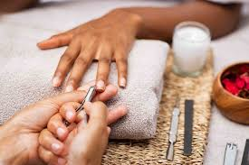

REGULAR
The skin and nails can be smoothened and softened by soaking them in warm, soapy water. After trimming, filing, and shaping the nails, the feet should be scrubbed to remove any dead skin. After that, paint the nails and use a moisturiser to improve their appearance!
FRENCH
Here, the standard manicure and pedicure process is used. A base coat is used after the nails have been filed and shaped. A clear or light pink polish is added to the base. Only naturally white tips will be present, giving it a healthy appearance. While a gel french manicure will appear more shiny and glossy since it goes under a UV light, a black french manicure will use the black colour in place of white tips.
SPA
For those who wish to take care of their nails, there is a more thorough version of manicure and pedicure! To display an immaculate look, more attention is paid to each nail. Additionally, the usage of high-quality nail polish and paint really helps in bringing out a flawless design. Salt scrubs and hot stone massages are also given at some places.
PARAFFIN
An alkaline-based product known as paraffin wax is known to give the nails an excessive amount of hydration and nourishment. Tea tree oil and chamomile are among the components. The salon employee will do a standard manicure and pedicure once the nails have been immersed in paraffin wax for a considerable amount of time.